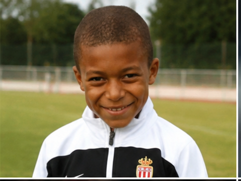
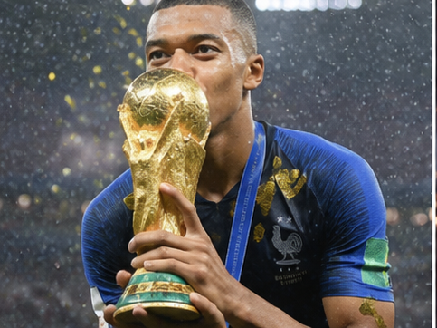
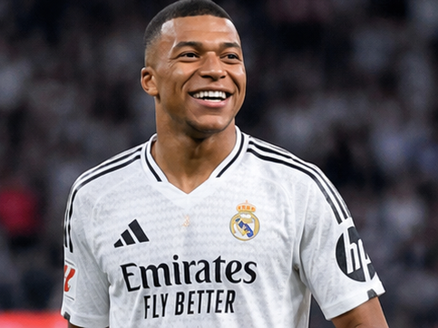
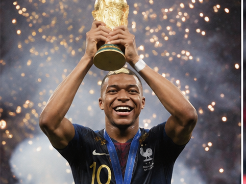
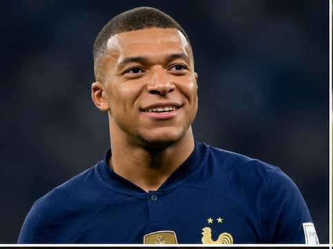

Kylian Mbappé is one of the brightest stars in modern football. Renowned for his lightning speed, exceptional dribbling, and clinical finishing, the French forward has achieved remarkable success from a young age. From winning the FIFA World Cup as a teenager to becoming one of the world's most feared attackers, Mbappé continues to shape the future of football.

Kylian Mbappé Lottin was born on 20 December 1998 in Paris, France, and grew up in Bondy. His father, Wilfried Mbappé, was a football coach, while his mother, Fayza Lamari, was a former handball player. Surrounded by sports from an early age, Mbappé developed a deep love for football and quickly became known for his remarkable talent and determination.

Mbappé began his football journey at AS Bondy, where he was coached by his father. His incredible pace and technical ability attracted attention from major European clubs. He later joined the prestigious Clairefontaine academy before moving to AS Monaco's youth system, where he continued his rapid development.

Mbappé made his professional debut for AS Monaco in 2015 at just 16 years old, becoming one of the youngest players to represent the club. During the 2016–17 season, he helped Monaco win the Ligue 1 title and reach the UEFA Champions League semi-finals, establishing himself as one of Europe's most exciting young talents.

After his breakthrough at Monaco, Mbappé joined Paris Saint-Germain in 2017, where he became one of the club's greatest players. He won multiple Ligue 1 titles, domestic cups, and consistently finished among Europe's top scorers. In 2024, he fulfilled a childhood dream by signing for Real Madrid, beginning a new chapter in his already outstanding career.

Mbappé made his senior debut for France in 2017 and quickly became one of the team's most important players. At the 2018 FIFA World Cup, he helped France win the tournament and became the first teenager since Pelé to score in a World Cup final. He later won the UEFA Nations League and played a starring role at the 2022 FIFA World Cup, finishing as the tournament's Golden Boot winner.
Mbappé is famous for his explosive acceleration, exceptional dribbling, intelligent movement, and clinical finishing. His ability to beat defenders in one-on-one situations, combined with his composure in front of goal, makes him one of the most dangerous forwards in world football. He is equally effective as a striker or left winger.
Despite being in the early years of his career, Kylian Mbappé has already become one of football's greatest talents. His achievements at both club and international level, combined with his professionalism and ambition, have made him an inspiration to young players around the world. Many believe he is destined to become one of football's all-time greats.
"I always want to improve and become a better player every day." — Kylian Mbappé